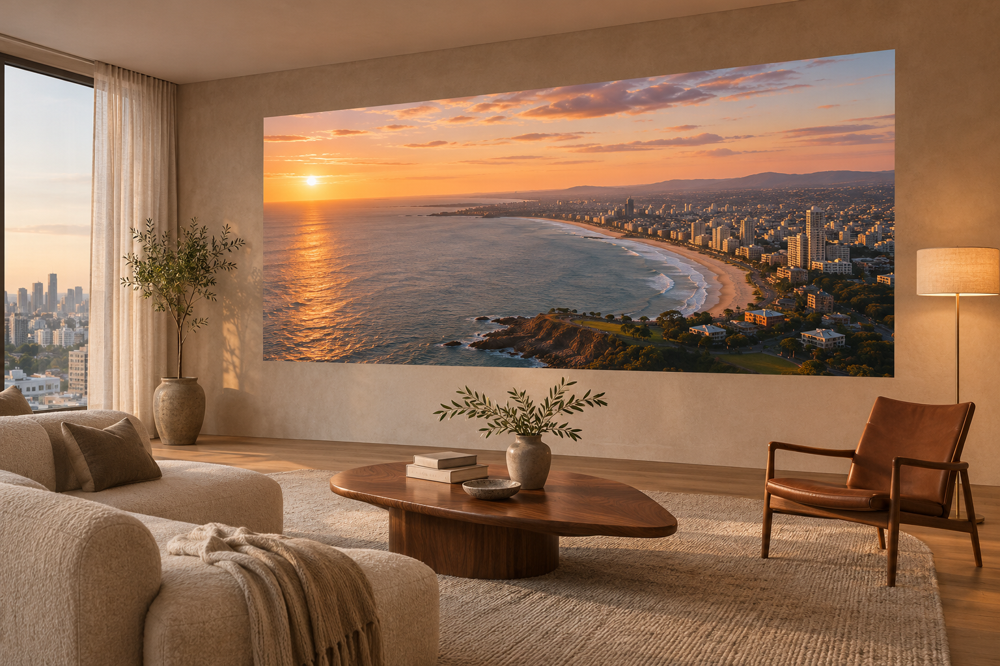
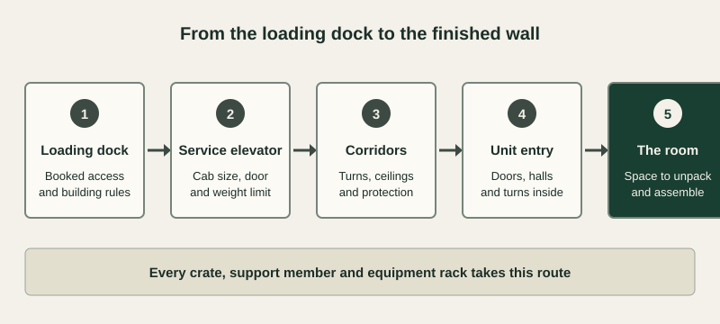

A MicroLED wall suits a condo or penthouse well, and it should be planned as a building project as much as a display choice. The wall arrives as individual cabinets that are assembled in the room, so the finished picture can be far larger than any elevator or door on the way in. Every crate, support member and equipment rack still has to travel through the building, and the finished wall has to be supported, powered, cooled and serviced within shared structure and shared rules. Settle those questions with the building and your project team before the wall size and room layout are fixed.
What changes when the wall goes into a condo or penthouse
The display is the same in a house and in a high-rise. Almost everything around it changes, and most of those changes are set by the building.
| Factor | In a house | In a condo or penthouse |
|---|---|---|
| Delivery | Driveway to the front door | Loading dock, service elevator and corridors, booked with the building |
| Work hours | Set by the owner and builder | Set by building rules |
| Wall support | Framing your builder controls | Shared structure the building may need to review |
| Sound | Mostly your own household | Neighbors beside, above and below |
| Power and cooling | Planned with the home’s systems | Limited by the unit’s capacity and building approvals |
| Future service | Open access whenever needed | Building access rules for every visit |
Map the delivery route from the loading dock to the wall

Our modular design is what makes a large wall practical in a high-rise. Each cabinet is far smaller than the finished picture, and the cabinets are carried in and assembled on site. They are only part of the delivery. Support members, packing crates, processors, equipment racks and installation tools all take the same route, and the longest or heaviest piece sets the limit.
Your dealer needs the building’s actual numbers: the service elevator’s cab size, door opening and weight limit, the corridor turns and ceiling heights, the protection the building requires and how deliveries are booked. Doors and hallways inside the unit count too, especially in a finished home. With those in hand, your dealer can plan the size of each crate and the order of delivery before a wall size is promised.
Confirm the wall can carry the display
A MicroLED wall hangs on a support frame fixed to the building, and in a high-rise the wall behind it may be shared structure. It may be concrete, it may be the wall you share with a neighbor, and it may hold pipes, ducts or risers that serve other homes. Your building may require its own engineer to review anything fixed to these walls.
Choose the display wall early with your architect and structural engineer, who decide whether that wall can carry the load and how the frame attaches. Our guide for architects and interior designers covers the depth, structure and pathways to reserve during design.
Plan the sound with the neighbors in mind
The display itself runs quietly. Speakers and subwoofers are the real concern in a shared building, because low bass travels through floors, walls and shafts into neighboring homes. Acoustic designers working in high-rise homes plan for sound reaching the floor below and the elevator shafts, as WSDG describes in this penthouse theater project.
Put the wall and the loudest speakers on walls away from neighbors wherever the floor plan allows. Bring an acoustic consultant in before the room is framed, and check the building’s rules on floor finishes and sound, since some buildings set their own requirements.
Settle power, cooling and the equipment location
The wall needs dedicated circuits, cooling for the heat it gives off and a ventilated space nearby for its processors and source equipment. A condo’s electrical service and air conditioning may be sized for ordinary living, and changes to either can need building approval and time. Confirm the unit’s capacity before the design is drawn, and choose an equipment location that stays reachable after the room is finished. Our guide to MicroLED room cooling explains how the heat load is worked out.
Keep a service route for the life of the wall
Our cabinets are engineered for front access, so modules come off the room side of the wall and nothing has to be reached from behind it. That suits a condo, where the wall behind the display is often structure or a neighbor’s home. Future visits still pass through the building, so record its access rules and keep matched spare modules stored in the home. Our MicroLED maintenance guide covers spares, service and calibration.
What your dealer decides, and who answers the rest
Your authorized dealer leads the display plan and works with the people who know the building.
- Your dealer: wall size, pixel pitch, crate sizes, delivery order, the support frame, the equipment location and the service plan
- Building management: the delivery route, elevator booking, work hours, insurance documents and the approval process
- Structural engineer: which wall can carry the display and how the frame attaches
- Acoustic consultant: sound isolation for the speakers and subwoofers
- Electrician and mechanical engineer: circuits, cooling capacity and any changes the building must approve
Bring this to the first meeting
- The building’s renovation rules and approval process
- The service elevator’s cab and door dimensions and its weight limit
- Floor plans showing which walls are shared with neighbors or carry risers
- The unit’s electrical capacity and air conditioning arrangement
- Any building rules on floor finishes, sound and work hours
Plan your condo or penthouse wall with an authorized dealer
Bring your floor plans and the building’s renovation rules to an authorized Opal dealer. They can show you a MicroLED wall at full size and work out a delivery, support and service plan that fits your building.
Find a Dealer for Your Condo or Penthouse